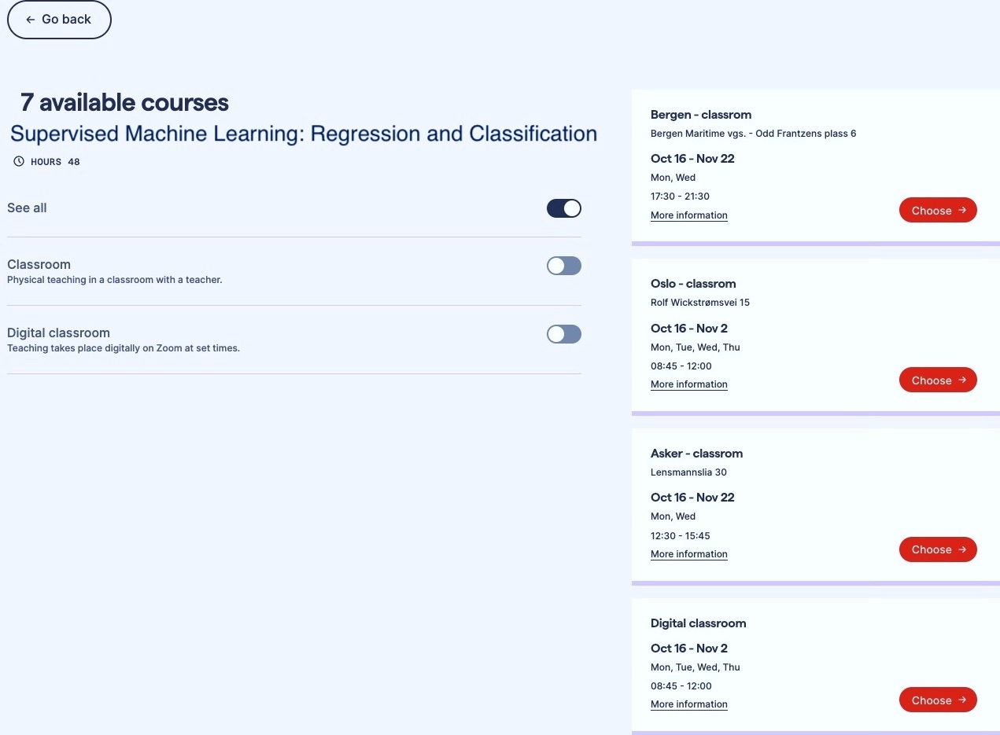

NAIC Training Plan
This tutorial shows all the events[1] related with the NAIC Training processes. Initial plan is to create a Training Plan in two different ways: Asynchronous Courses and Synchronous Courses.
Asynchronous Courses
Those courses will be asynchronous.
1. CodeRefinery Courses
These are the lessons which are included in the “standard” CodeRefinery workshop, and what we believe that every computational scientist (even those with very small amounts of computation) should know. But there is more: Also see all of our online lessons.
Introduction to version control
This lesson brings you from zero to using Git and GitHub for own projects.
Collaborative distributed version control
This lesson builds on “Introduction to version control” and we apply branching and learn about pull requests (merge requests), forks, and collaboration using Git and GitHub.
Reproducible research
We focus here on 3 aspects of reproducible programs and computations: documenting dependencies, environments, and computational steps in a reproducible way. We touch on containers.
Social coding and open software
We motivate and give an overview over software and data licensing and software citation best practices.
Documentation
Here we give an overview of the different ways how a code project can be documented: from small projects to larger projects. Markdown and Sphinx are central tools in this lesson.
Jupyter notebooks
This lesson gives an overview of what Jupyter notebooks are, when they can be particularly useful, and shows best practices for reusable and reproducible notebooks.
Automated testing
In this lesson we talk about motivation for testing, about test design, but also about some tools that are typically used for automated testing of software.
Modular code development type-along
The focus of this lesson is how to partition and organize projects as they grow from one screen-full to larger and how to make code portions reusable across projects and across notebooks.
Examples
The course name, content, duration, and video materials will be available.
These courses can provide links to NRIS’s HPC courses or CodeRefinery training video recordings text files.
For Git Intro, such a CR playlist can be used:
2. NRIS Courses
Norwegian Research Infrastructure Services NRIS (formerly known as the The Metacenter), has an extensive education and training program to assist existing and future users of our services. The courses are aimed to give the participants an understanding of our services as well as using the resources effectively. The courses are free of charges. Our upcoming courses can be reached here
Past events with YouTube materials and Q&A sessions can be found here
Core Courses: All lesson materials are regularly improved and kept up-to-date by NRIS. These intro lessons are also fit for self learning.
UNIX-intro for HPC users
Contents:
The terminal and remote login
Moving around and looking at things
Finding Things
Create/modify files
Scripting
Composing commands with pipes
Linux command cheat sheet
HPC Intro Lessons
Contents:
Why use a Cluster?
Working on a remote HPC system
Scheduling jobs
Keeping interactive jobs alive
Transferring files
Accessing software
Compute and storage quota
Using shared resources responsibly
GPU programming
Synchronous Courses
Synchronous courses under this heading can be conducted in two ways:
Examples

1. Online Courses
Periodic courses created according to a timeline.
Examples
We can include a few planned CR schedules here.
2. Physical Courses
For these courses, it is necessary to directly contact the personnel who will provide face-to-face instruction and discuss the frequency of their classes.
Examples
We don’t have any examples for this yet, but there will be individuals who prefer this option, especially those who want to receive one-on-one and active instruction in environments like a LAB and ask questions to the instructor immediately.